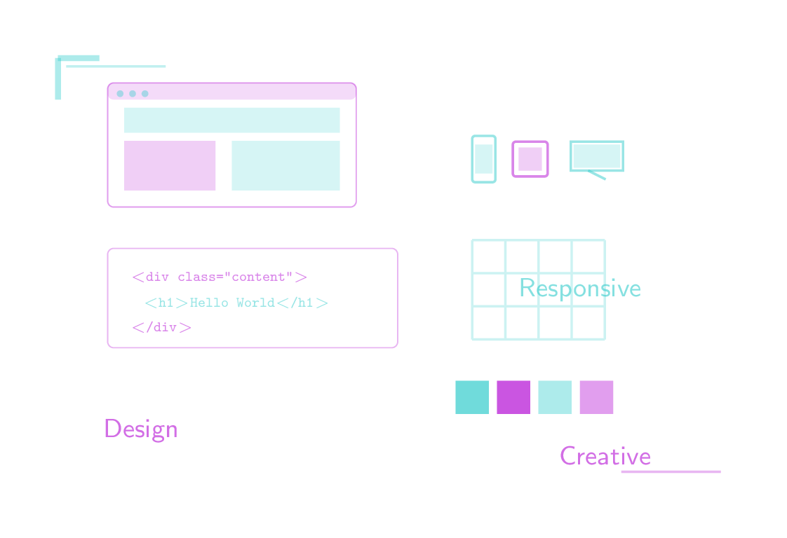
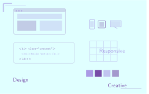

Visual Design and Web Project Assignment 1 - Image 2
Objective
Create a web-optimised background image for the Web Witchcraft and Wizardry landing page based on the back of the Embodied Mind Business Cards. The image must have versions that support dark and light themes and landscape and portrait screen orientations.
The Process
The starting point was the Embodied Mind Business Cards, specifically the picture on the back

The original LaTeX file was converted to a template with parameters to allow for different versions of the image to be generated from the same source. The template included parameters for dimensions, colours, opacity levels, and positions of various elements in the image.
% Template for web background cards
% Parameters:
% \bgwidth - Card width
% \bgheight - Card height
% \bgcolorbase - Base colour for background (e.g._light,_dark)
% \colourone - First accent colour
% \colourtwo - Second accent colour
% \opacityset - Opacity multiplier (e.g., 0.5 for light, 0.8 for dark)
% \browserx - X position for browser window
% \browsery - Y position for browser window
% \iconsx - X position for responsive icons
% \iconsy - Y position for responsive icons
% \codex - X position for code snippet
% \codey - Y position for code snippet
% \palettex - X position for colour palette
% \palettey - Y position for colour palette
% \gridx - X position for grid
% \gridy - Y position for grid
% \labelonex - X position for first label
% \labeloney - Y position for first label
% \labeltwox - X position for second label
% \labeltwoy - Y position for second label
% \labelthreex - X position for third label
% \labelthreey - Y position for third label
% \lineoneax - X start for first decorative line
% \lineoneay - Y position for first decorative line
% \lineonebx - X end for first decorative line
% \linetwoax - X start for second decorative line
% \linetwoay - Y position for second decorative line
% \linetwobx - X end for second decorative line
% \cornerx - X position for corner accent
% \cornery - Y position for corner accent
% \corneryb - Y bottom for corner accent
% \cornerxb - X right for corner accent
\begin{tikzpicture}
% Define the card background
\fill[\bgcolorbase] (0,0) rectangle (\bgwidth,\bgheight);
% Browser window mockup
\begin{scope}[shift={(\browserx,\browsery)}]
% Browser chrome
\draw[\colourone, opacity=\opacityone, rounded corners=2pt] (0,0) rectangle (3.0,1.5);
\fill[\colourone, opacity=\opacitychrome, rounded corners=2pt] (0,1.3) rectangle (3.0,1.5);
% Browser dots
\fill[\colourtwo, opacity=\opacityone] (0.15,1.37) circle (0.04);
\fill[\colourtwo, opacity=\opacityone] (0.30,1.37) circle (0.04);
\fill[\colourtwo, opacity=\opacityone] (0.45,1.37) circle (0.04);
% Content area with simple layout
\fill[\colourtwo, opacity=\opacitycontent] (0.2,0.9) rectangle (2.8,1.2);
\fill[\colourone, opacity=\opacitycontent] (0.2,0.2) rectangle (1.3,0.8);
\fill[\colourtwo, opacity=\opacitycontent] (1.5,0.2) rectangle (2.8,0.8);
\end{scope}
% Responsive design icons (mobile, tablet, desktop)
\begin{scope}[shift={(\iconsx,\iconsy)}, scale=0.7]
% Mobile
\draw[\colourtwo, thick, opacity=\opacityicons, rounded corners=1pt] (0,0) rectangle (0.4,0.8);
\fill[\colourtwo, opacity=\opacityiconfill] (0.05,0.15) rectangle (0.35,0.65);
% Tablet
\draw[\colourone, thick, opacity=\opacityicons, rounded corners=1pt] (0.7,0.1) rectangle (1.3,0.7);
\fill[\colourone, opacity=\opacityiconfill] (0.8,0.2) rectangle (1.2,0.6);
% Desktop
\draw[\colourtwo, thick, opacity=\opacityicons] (1.7,0.2) rectangle (2.6,0.7);
\draw[\colourtwo, thick, opacity=\opacityicons] (2.0,0.2) -- (2.3,0.05) -- (2.3,0.05);
\fill[\colourtwo, opacity=\opacityiconfill] (1.75,0.25) rectangle (2.55,0.65);
\end{scope}
% Code snippet element
\begin{scope}[shift={(\codex,\codey)}]
\draw[\colourone, opacity=\opacitycodebg, rounded corners=2pt] (0,0) rectangle (3.5,1.2);
\node[\colourone, font=\tiny\ttfamily, opacity=\opacitycode, align=left, anchor=west] at (0.15,0.85)
{\textless div class="content"\textgreater};
\node[\colourtwo, font=\tiny\ttfamily, opacity=\opacitycode, align=left, anchor=west] at (0.3,0.55)
{\textless h1\textgreater Hello World\textless/h1\textgreater};
\node[\colourone, font=\tiny\ttfamily, opacity=\opacitycode, align=left, anchor=west] at (0.15,0.25)
{\textless/div\textgreater};
\end{scope}
% Colour palette squares
\begin{scope}[shift={(\palettex,\palettey)}]
\fill[\colourtwo, opacity=\opacitypaletteone] (0,0) rectangle (0.4,0.4);
\fill[\colourone, opacity=\opacitypaletteone] (0.5,0) rectangle (0.9,0.4);
\fill[\colourtwo, opacity=\opacitypalettetwo] (1.0,0) rectangle (1.4,0.4);
\fill[\colourone, opacity=\opacitypalettetwo] (1.5,0) rectangle (1.9,0.4);
\end{scope}
% Grid layout representation
\begin{scope}[shift={(\gridx,\gridy)}, opacity=\opacitygrid]
\draw[\gridcolor, thick] (0,0) grid[step=0.4] (1.6,1.2);
\end{scope}
% Friendly labels
\node[\colourone, font=\small\sffamily, opacity=\opacitylabels] at (\labelonex, \labeloney) {Design};
\node[\colourtwo, font=\small\sffamily, opacity=\opacitylabels] at (\labeltwox, \labeltwoy) {Responsive};
\node[\colourone, font=\small\sffamily, opacity=\opacitylabels] at (\labelthreex, \labelthreey) {Creative};
% Subtle decorative elements
\draw[\colourtwo, thick, opacity=\opacitylines] (\lineoneax,\lineoneay) -- (\lineonebx,\lineoneay);
\draw[\colourone, thick, opacity=\opacitylines] (\linetwoax,\linetwoay) -- (\linetwobx,\linetwoay);
% Small corner accent
\draw[\colourtwo, line width=2pt, opacity=\opacitycorner] (\cornerx,\cornery) -- (\cornerx,\corneryb);
\draw[\colourtwo, line width=2pt, opacity=\opacitycorner] (\cornerx,\cornery) -- (\cornerxb,\cornery);
\end{tikzpicture}
A python script was used to generate the four background latex files from the template
#!/usr/bin/env python3
"""
Generate all background-web-*.tex files from template
This script implements DRY principle by generating files from parameters
"""
import os
# Define portrait parameters (common for all portrait variants)
PORTRAIT_PARAMS = {
'bgwidth': '5.5',
'bgheight': '8.5',
'browserx': '1.2',
'browsery': '6.5',
'iconsx': '1.5',
'iconsy': '5.2',
'codex': '1.0',
'codey': '3.5',
'palettex': '1.5',
'palettey': '2.4',
'gridx': '1.8',
'gridy': '1.0',
'labelonex': '2.7',
'labeloney': '3.0',
'labeltwox': '4.2',
'labeltwoy': '5.5',
'labelthreex': '4.0',
'labelthreey': '1.5',
'lineoneax': '0.3',
'lineoneay': '8.2',
'lineonebx': '1.5',
'linetwoax': '4.0',
'linetwoay': '0.3',
'linetwobx': '5.2',
'cornerx': '0.2',
'cornery': '8.3',
'corneryb': '7.8',
'cornerxb': '0.7',
}
# Define landscape parameters (common for all landscape variants)
LANDSCAPE_PARAMS = {
'bgwidth': '8.5',
'bgheight': '5.5',
'browserx': '0.8',
'browsery': '3.5',
'iconsx': '5.2',
'iconsy': '3.8',
'codex': '0.8',
'codey': '1.8',
'palettex': '5.0',
'palettey': '1.0',
'gridx': '5.2',
'gridy': '1.9',
'labelonex': '1.2',
'labeloney': '0.8',
'labeltwox': '6.5',
'labeltwoy': '2.5',
'labelthreex': '6.8',
'labelthreey': '0.5',
'lineoneax': '0.3',
'lineoneay': '5.2',
'lineonebx': '1.5',
'linetwoax': '7.0',
'linetwoay': '0.3',
'linetwobx': '8.2',
'cornerx': '0.2',
'cornery': '5.3',
'corneryb': '4.8',
'cornerxb': '0.7',
}
# Define light theme opacities
LIGHT_OPACITIES = {
'opacityone': '0.4',
'opacitychrome': '0.15',
'opacitycontent': '0.2',
'opacityicons': '0.5',
'opacityiconfill': '0.2',
'opacitycodebg': '0.3',
'opacitycode': '0.5',
'opacitypaletteone': '0.7',
'opacitypalettetwo': '0.4',
'opacitygrid': '0.25',
'opacitylabels': '0.6',
'opacitylines': '0.3',
'opacitycorner': '0.4',
}
# Define dark theme opacities
DARK_OPACITIES = {
'opacityone': '0.7',
'opacitychrome': '0.3',
'opacitycontent': '0.4',
'opacityicons': '0.8',
'opacityiconfill': '0.3',
'opacitycodebg': '0.6',
'opacitycode': '0.8',
'opacitypaletteone': '0.9',
'opacitypalettetwo': '0.6',
'opacitygrid': '0.4',
'opacitylabels': '0.9',
'opacitylines': '0.6',
'opacitycorner': '0.7',
}
def generate_file(orientation, mode, source_dir='source'):
"""Generate a single background-web file"""
filename = f"{source_dir}/background-web-{orientation}-{mode}.tex"
# Select parameters based on orientation
package_orientation = orientation
position_params = PORTRAIT_PARAMS if orientation == 'portrait' else LANDSCAPE_PARAMS
# Select opacities and colors based on mode
if mode == 'light':
opacity_params = LIGHT_OPACITIES
bg_color = "web_background_light"
colour_one = "web_background_light_highlight"
colour_two = "web_background_light_alt"
else:
opacity_params = DARK_OPACITIES
bg_color = "web_background_dark"
colour_one = "web_background_dark_highlight"
colour_two = "web_background_dark_alt"
# Combine all parameters
all_params = {**position_params, **opacity_params}
# Generate parameter definitions
param_defs = '\n'.join([f'\\def\\{key}{{{value}}}' for key, value in all_params.items()])
# Generate the file content
content = f"""\\documentclass[border=0mm]{{standalone}}
\\input{{common/packages-background.tex}}
\\input{{common/packages-background-{package_orientation}.tex}}
\\input{{common/colours.tex}}
% {orientation.capitalize()} dimensions ({mode} mode)
\\def\\bgcolorbase{{{bg_color}}}
\\def\\colourone{{{colour_one}}}
\\def\\colourtwo{{{colour_two}}}
\\def\\gridcolor{{{colour_two}}}
{param_defs}
\\begin{{document}}
\\input{{common/background-web-template.tex}}
\\end{{document}}
"""
# Write the file
with open(filename, 'w') as f:
f.write(content)
print(f"Generated: {filename}")
def main():
"""Generate all background-web files"""
orientations = ['portrait', 'landscape']
modes = ['light', 'dark']
for orientation in orientations:
for mode in modes:
generate_file(orientation, mode)
print("\nAll background-web-*.tex files have been generated!")
if __name__ == '__main__':
main()
Each of the four LaTeX files was compiled to produce a pdf file, which was then converted to SVG format using pdftocairo.
#!/bin/bash
# Compile a LaTeX file to PDF and convert to SVG
# Usage: ./tex-to-svg.sh filename (without .tex extension)
# Example: ./tex-to-svg.sh logo-embodied-mind-with-name-purple
# Run from the artwork folder to ensure correct paths
# Colours for output
RED='\033[0;31m'
GREEN='\033[0;32m'
CYAN='\033[0;36m'
YELLOW='\033[1;33m'
NC='\033[0m' # No Colour
if [ $# -eq 0 ]; then
echo -e "${RED}Error: Please provide a filename${NC}"
echo "Usage: $0 filename outputFolder"
echo "Example: $0 source/logo-embodied-mind-with-name-purple generated"
exit 1
fi
BASENAME="$1"
INPUT_FOLDER=$(dirname "$BASENAME")
FILENAME=$(basename "$BASENAME")
BASENAME="${INPUT_FOLDER}/${FILENAME}"
OUTPUT_FOLDER="${2:-generated}"
TEXFILE="${BASENAME}.tex"
PDFFILE="${FILENAME}.pdf"
SVGFILE="${FILENAME}.svg"
# Check if .tex file exists
if [ ! -f "$TEXFILE" ]; then
echo -e "${RED}Error: $TEXFILE not found${NC}"
exit 1
fi
echo -e "${GREEN}Starting LaTeX compilation...${NC}"
echo -e "${CYAN}Running: pdflatex $TEXFILE${NC}"
# Compile .tex to PDF using pdflatex
if ! pdflatex "$TEXFILE"; then
echo -e "${RED}Error: pdflatex compilation failed${NC}"
echo -e "${YELLOW}Check the .log file for details: ${FILENAME}.log${NC}"
exit 1
fi
# Check if PDF was created
if [ ! -f "$PDFFILE" ]; then
echo -e "${RED}Error: $PDFFILE was not created${NC}"
exit 1
fi
PDF_SIZE=$(du -h "$PDFFILE" | cut -f1)
echo -e "${GREEN}✓ PDF created successfully: $PDFFILE ($PDF_SIZE)${NC}"
echo -e "${GREEN}Converting PDF to SVG...${NC}"
echo -e "${CYAN}Running: pdftocairo -svg $PDFFILE $SVGFILE${NC}"
# Convert PDF to SVG using pdftocairo
if ! pdftocairo -svg "$PDFFILE" "$SVGFILE"; then
echo -e "${RED}Error: PDF to SVG conversion failed${NC}"
echo -e "${YELLOW}Make sure pdftocairo (poppler-utils) is installed${NC}"
exit 1
fi
# Check if SVG was created
if [ ! -f "$SVGFILE" ]; then
echo -e "${RED}Error: $SVGFILE was not created${NC}"
exit 1
fi
SVG_SIZE=$(du -h "$SVGFILE" | cut -f1)
echo -e "${GREEN}✓ SVG created successfully: $SVGFILE ($SVG_SIZE)${NC}"
echo ""
echo -e "${GREEN}Conversion complete!${NC}"
echo "Files created:"
echo " • $PDFFILE ($PDF_SIZE)"
echo " • $SVGFILE ($SVG_SIZE)"
mkdir -p "$OUTPUT_FOLDER"
mv "$SVGFILE" "$OUTPUT_FOLDER"
echo -e "${GREEN}✓ Moved $SVGFILE to $OUTPUT_FOLDER/${NC}"
# Clean up intermediate files
rm -f "$PDFFILE" "${FILENAME}.aux" "${FILENAME}.log"
N.B. The colours used in these images are provisional and will be refined in the final version used in the project after more reading around colour theory has been undertaken and the actual colours for light and dark mode of the web site have been finalised (see the associated essay for details).
The Result
